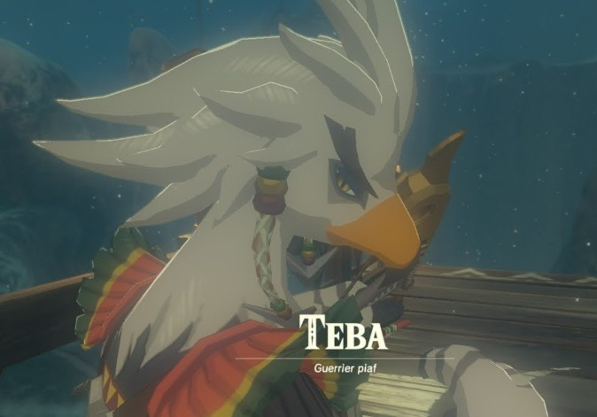
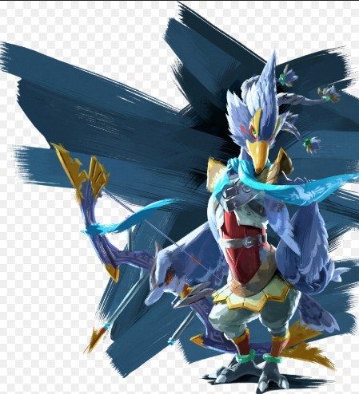
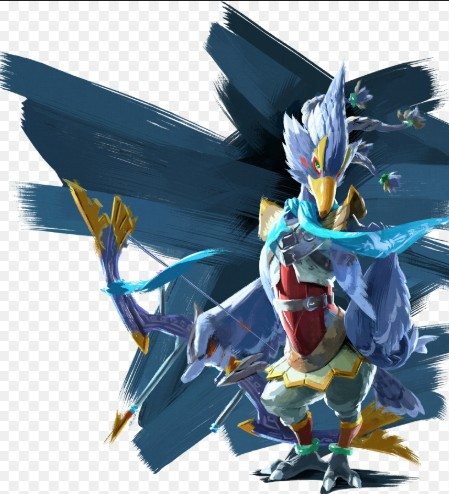

Le peuple Piaf
Les piafs sont une race d'oiseaux humanoïdes, vivant principalement sur les hauts plateaux et les îles suspendues dans le ciel. Ils sont originaires de la région d'Hebra, dans le nord d'Hyrule. Leur apparence est caractérisée par des ailes et des plumes, ce qui leur permet de voler, et leur société est souvent axée sur des traditions de chasse et de préservation des ressources naturelles. Dans Breath of the Wild, les Ritos sont dirigés par Teba et sa famille, et ils ont un rôle clé à jouer dans la défense de leur région contre la calamité. Le peuple Rito est également lié à l'élément du vent, et leur créature divine, Vah Medoh, est une immense machine volante.
Caractéristiques des Piafs :
- Peuple d'oiseau bipède
- Maîtrise du vol et de l'arc
- vie dans les montagnes
- Utilisez les courants ascendants pour naviguer à travers le donjon.
- Activez les terminaux en utilisant les capacités de Revali.
- Évitez les lasers et les pièges en utilisant votre bouclier et vos compétences de vol.
- Utilisez les courants ascendants pour atteindre le boss.
- Évitez ses attaques de vent en utilisant votre bouclier.
- Attaquez-le avec des flèches et des attaques aériennes.
Galerie
 

Donjon : Vah Medoh
Le donjon de Vah Medoh est situé dans les hauteurs de la région de Tabanta. Voici comment le battre :
Étapes pour battre Vah Medoh :
Boss : Vent de Ganon
Le boss du donjon Vah Medoh est le Vent de Ganon. Voici comment le battre :